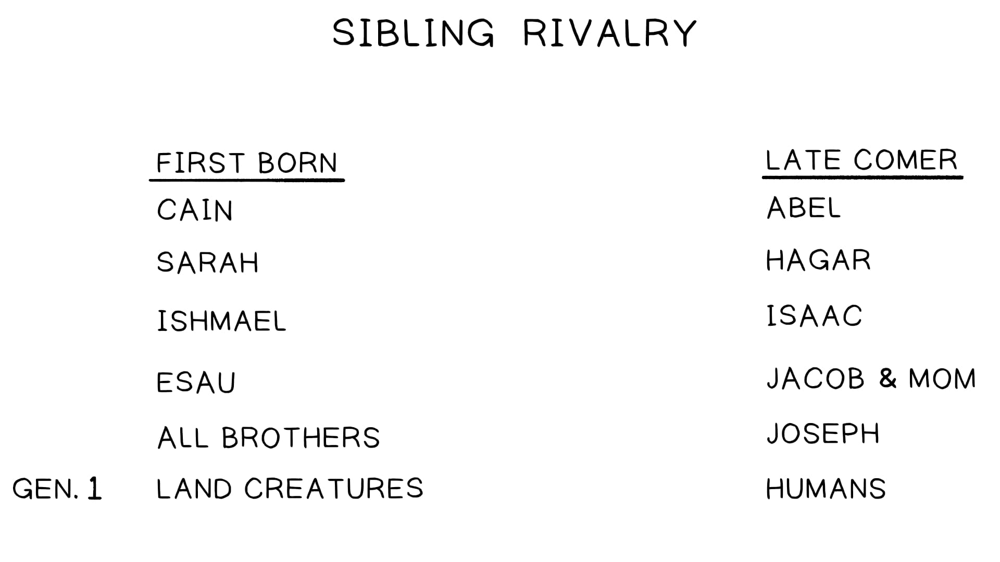
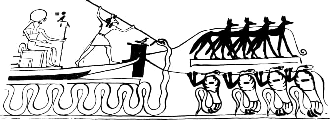
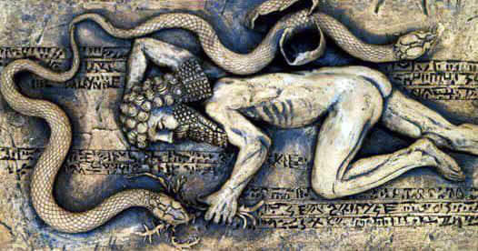

Gênesis 3:1 Tradução do Instrutor: "Ora, a serpente (heb. nakhash / נחש) era mais astuta do que qualquer criatura viva do campo que o SENHOR Deus havia feito." A imagem da serpente como uma "criatura viva do campo" é uma imagem narrativa densa que convida o leitor a ponderá-la de muitos ângulos. Aqui estão algumas das camadas de significado que parecem pretendidas pela escolha do autor da serpente como a tentadora.Genesis 3:1 Instructor's Translation: "Now the snake (Heb. nakhash /נחש) was more shrewd than any living creature of the field which the LORD God had made." The image of the snake as a "living creature of the field" is a dense narrative image that invites the reader to ponder it from many angles. Here are some of the layers of meaning that seem intended by the author's choice of the snake as the tempter.
No dia seis de Gênesis 1, Deus povoa a terra seca com criaturas — primeiro os animais e depois a humanidade. Gênesis 1:24-26 (NASB*): "24 E disse Deus: 'Produza a terra seres vivos segundo as suas espécies: gado, répteis e bestas da terra segundo as suas espécies'; e assim foi. 25 Deus fez os seres vivos da terra segundo as suas espécies, e o gado segundo as suas espécies, e tudo o que rasteja sobre a terra segundo a sua espécie; e Deus viu que era bom. 26 E disse Deus: 'Façamos o humano à nossa imagem, conforme a nossa semelhança; e dominem sobre os peixes do mar, e sobre as aves dos céus, e sobre o gado, e sobre toda a terra, e sobre todo réptil que rasteja sobre a terra.'" *Palavras-Chave Adaptadas pelo Professor. Observe que os animais são chamados de "seres vivos" (heb. khayyot / חיות) e especificados por categorias grosseiras: animais domesticados, rastejadores (os selvagens que correm e se escondem) e as bestas selvagens. Os humanos são a última coisa a ser criada em Gênesis 1, mas são os elevados a governar sobre toda a criação: o mar, o céu e as criaturas da terra. Isso estabelece um importante padrão de design na história bíblica: a elevação por Deus do último chegado a um papel de honra acima dos que vieram antes. No livro de Gênesis, o tema da elevação do último chegado muitas vezes foca no ciúme e na ira do mais velho. Pense em Caim e Abel, ou Jacó e Esaú ("o mais velho servirá ao mais novo", Gn 25:23), ou nos irmãos mais velhos de José que o odeiam porque ele teve um sonho onde reinava sobre eles (Gn 37:1-11). Ou pense nos ciumentos irmãos mais velhos de Davi que não foram escolhidos para ser rei (1 Sm 16-17), e assim por diante. Quando você chega a Gênesis 3 após considerar esse padrão por toda a Bíblia Hebraica, é levado a notar as bestas do dia seis, que são criadas primeiro, mas convocadas a vir sob o governo dos humanos que vieram depois. Alguma delas será como Caim, ou Esaú, ou os irmãos de José, e ressentir ser governada por uma criatura que só veio à terra seca após elas?On day six of Genesis 1, God populates the dry land with creatures—first the animals and then humanity. Genesis 1:24-26 NASB*: "24 And God said, 'Let the land bring forth living creatures after their kind: cattle and creeping things and beasts of the land after their kind'; and it was so. 25 God made the living creatures of the land after their kind, and the cattle after their kind, and everything that creeps on the ground after its kind; and God saw that it was good. 26 And God said, 'Let us make human in our image, according to our likeness; and let them rule over the fish of the sea and over the birds of the sky and over the cattle and over all the earth, and over every creeping thing that creeps on the earth.'" *Key Words Adapted by Teacher. Notice the animals are called "the living creatures" (Heb. khayyot /חיות) and specified by rough categories: domesticated animals, creepers (the wild ones that run and hide), and the wild beasts. Humans are the last thing to be created in Genesis 1, yet they are the ones elevated to rule over all creation: the sea, the sky, and the land creatures. This establishes a major design pattern in the biblical story: God's elevation of the latecomer to a role of honor above the ones who came before. In the book of Genesis, the theme of the latecomer's elevation often focuses on the jealousy and anger of the elder. Think of Cain and Abel, or Jacob and Esau ("the older will serve the younger," (Gen. 25:23), or of Joseph's older brothers who hate him because he had a dream where he ruled over them (Gen. 37:1-11). Or think of David's jealous older brothers who were not chosen to be king (1 Sam. 16-17), and so on. When you come to Genesis 3 after considering this pattern throughout the Hebrew Bible, you're prompted to notice the beasts of day six, who are created first yet summoned to come under the rule of humans who came second. Will any of them be like Cain or Esau or Joseph's brothers and resent being ruled by a creature who has only come to the dry land after them?
No antigo Oriente Próximo, serpentes eram poderosos símbolos de criaturas caóticas, criaturas que não pertencem adequadamente ao mundo divinamente ordenado. A serpente é tanto uma criatura de água quanto de terra, mas não tem pernas, o que a torna fora de lugar na terra seca. Mas também não tem barbatanas, o que a torna igualmente fora de lugar na água. Essa natureza "fora de ordem" da serpente é por que ela está incluída entre os animais ritualmente impuros nas leis alimentares kosher de Israel (Lv 11:42). Animais que não se encaixam adequadamente em sua categoria são liminares e pertencem ao reino não-ordenado. Serpentes eram potentes símbolos de imortalidade (renascimento através da troca de pele), morte (picada venenosa) e o reino subterrâneo dos mortos (rastrejam no chão e descem em buracos). Ter domínio sobre serpentes era ser senhor da morte. Isso explica a onipresente imagética de serpentes na arte real egípcia.In the ancient Near East, snakes were powerful symbols of chaos creatures, creatures that don't properly belong to the divinely ordered world. The snake is both a water and land creature, yet it has no legs, making it out of place on the dry land. But it also doesn't have fins, making it also out of place in the water. This "out of order" nature of the snake is why it is included among the ritually impure animals in Israel's Kosher food laws (Lev. 11:42). Animals that do not properly fit in their category are liminal and belong to the non-ordered realm. Snakes were potent symbols of immortality (rebirth through shedding of skin), death (poisonous bite), and the underworld realm of the dead (they crawl on the ground and descend into holes). To have mastery of snakes was to be a master of death. This explains the pervasive snake imagery in Egyptian royal art.


"Em todo o mundo antigo, [a serpente] era dotada de qualidades divinas ou semidivinas; era venerada como um emblema de saúde, fertilidade, imortalidade, sabedoria oculta e mal caótico; e era frequentemente adorada. A serpente desempenhou um papel significativo na mitologia, no simbolismo religioso e nos cultos do antigo Oriente Próximo.""Throughout the ancient world, [the serpent] was endowed with divine or semidivine qualities; it was venerated as an emblem of health, fertility, immortality, occult wisdom, and chaotic evil; and it was often worshipped. The serpent played a significant role in the mythology, the religious symbolism, and the cults of the ancient Near East."
Sarna, Nahum (2001). O Comentário Torá JPS: Gênesis. Jewish Publication Society.Sarna, Nahum (2001). The JPS Torah Commentary: Genesis. Jewish Publication Society.
A palavra nakhash (נחש) também contém um duplo sentido porque é também a palavra para feitiçaria ou adivinhação. Deuteronômio 18:9-11 (NVI): "9 Quando você entrar na terra que o SENHOR seu Deus lhe dá, não aprenda a imitar as detestáveis maneiras das nações ali. 10 Não se ache entre vocês quem sacrifique seu filho ou sua filha no fogo, quem pratica adivinhação (nakhash) ou feitiçaria, interprete presságios, pratique feitiçaria, 11 ou lance encantamentos, ou quem seja médium ou espírita ou consulte os mortos." 2 Reis 21:5-6 (NVI*): "5 Nos dois pátios do templo do SENHOR, [Manassés] construiu altares para todos os exércitos celestes. 6 Ele sacrificou seu próprio filho no fogo, praticou adivinhação (nakhash), buscou presságios e consultou médiuns e espíritas. Fez muito mal aos olhos do SENHOR, provocando sua ira." *Palavras-Chave Adaptadas pelo Professor. 2 Reis 17:16-17 (NVI*): "16 Abandonaram todos os mandamentos do SENHOR seu Deus e fizeram para si dois ídolos fundidos em forma de bezerro, e um poste de Aserá. Curvaram-se perante todos os exércitos celestes, e adoraram Baal. 17 Sacrificaram seus filhos e filhas no fogo. Praticaram adivinhação (nakhash) e buscaram presságios e venderam-se para fazer o mal aos olhos do SENHOR, provocando sua ira." *Palavras-Chave Adaptadas pelo Professor.The word nakhash (נחש) also contains a double meaning because it is also the word for sorcery or divination. Deuteronomy 18:9-11 NIV: "9 When you enter the land the LORD your God is giving you, do not learn to imitate the detestable ways of the nations there. 10 Let no one be found among you who sacrifices their son or daughter in the fire, who practices divination (nakhash) or sorcery, interprets omens, engages in witchcraft, 11 or casts spells, or who is a medium or spiritist or who consults the dead." 2 Kings 21:5-6 NIV*: "5 In the two courts of the temple of the LORD, [Manasseh] built altars to all the starry hosts. 6 He sacrificed his own son in the fire, practiced divination (nakhash), sought omens, and consulted mediums and spiritists. He did much evil in the eyes of the LORD, arousing his anger." *Key Words Adapted by Teacher. 2 Kings 17:16-17 NIV*: "16 They forsook all the commands of the LORD their God and made for themselves two idols cast in the shape of calves, and an Asherah pole. They bowed down to all the starry hosts, and they worshiped Baal. 17 They sacrificed their sons and daughters in the fire. They practiced divination (nakhash) and sought omens and sold themselves to do evil in the eyes of the LORD, arousing his anger." *Key Words Adapted by Teacher.
O jardim do Éden é um jardim-templo em alta montanha onde o Céu e suas criaturas se sobrepõem à Terra e suas criaturas. Aqui estão várias observações que nos levam a essa conclusão. O jardim é a fonte de um único rio que deixa o jardim e se divide em quatro rios que regam as principais regiões do mundo bíblico (veja Gn 2:8-14). Isso tem uma implicação bastante óbvia; o jardim do Éden é retratado como o lugar mais alto da terra seca. Éden é descrito como a terra hospedeira do templo-jardim supremo. É uma terra de ouro, árvores frutíferas, pedras preciosas e abundância (Gn 2:9-14). Estas são precisamente as imagens e materiais usados na construção do tabernáculo (Êx 25:1-31:18) e do templo em Jerusalém (1 Rs 6:1-7:51). O templo Éden Céu-Terra é o mesmo lugar que os profetas de Israel viram em suas visões (Is 6:1-13; 1 Rs 22:1-53; Ez 1:1-28), um lugar onde a presença celestial de Deus se sobrepõe à Terra. Somos informados de que há querubins neste jardim (Gn 3:22-24), assim como aqueles que povoam a sala do trono de Deus (Ez 10:1-15). Tudo isso leva o leitor a esperar que Adão e Eva vivam juntos no jardim com seres espirituais da variedade animal híbrida. Então, quando uma serpente falante aparece em Gênesis 3, temos uma categoria para esse tipo de criatura. Vejamos a declaração onde a serpente é introduzida. Gênesis 3:1 (NASB*): "Ora, a serpente (heb. nakhash / נחש) era mais astuta do que qualquer besta do campo que o SENHOR Deus havia feito. E disse à mulher: 'É verdade que Deus disse: Vocês não comerão de nenhuma árvore do jardim?'" *Palavras-Chave Adaptadas pelo Professor. Este comentário sugere que há mais nessa serpente do que apenas um animal. Para começar, ela pode falar! A frase "mais astuta do que qualquer besta do campo" poderia significar que a serpente pertence às bestas do campo e é mais astuta que as demais. Ou também poderia significar que ela não é tecnicamente uma besta do campo; em vez disso, é um tipo diferente de criatura que é simplesmente mais astuta do que qualquer tipo de besta. Com qualquer interpretação, podemos concluir que esta não é uma serpente comum! A serpente também parece ter conhecimento das decisões e propósitos de Deus ("Deus sabe que no dia em que vocês comerem [o fruto] serão como seres divinos, conhecendo o bem e o mal." Gn 3:5). Se avançarmos para o final da narrativa do Éden, quando Deus amaldiçoa a serpente em Gênesis 3:14, encontraremos outra declaração interessante sobre a natureza da serpente. Gênesis 3:14 (NASB): "Porque você fez isso, / amaldiçoada és mais do que todo gado, / e mais do que toda besta do campo; / sobre seu ventre você irá, / e pó você comerá / todos os dias de sua vida." Se fosse uma serpente normal, não rastejaria já no pó sobre seu ventre? Por que Deus diz que o estado futuro da serpente será ir no pó se ela já rasteja no chão? Esta declaração poderia significar que a serpente que se aproximou dos humanos não estava no chão. Esta imagem intrigante de uma serpente que não rasteja no chão encontra sua confirmação muito mais tarde na história bíblica. Quando o profeta Isaías tem uma visão da sala do trono celestial de Deus, ele vê criaturas celestiais cercando o trono de Deus. Nas visões de Ezequiel do mesmo espaço, esses seres são chamados de "querubins" e "seres vivos", mas Isaías os chama de "serafins" (heb. שרפים). Isaías 6:1-3 (NASB): "1 No ano em que o rei Uzias morreu, eu vi o Senhor assentado num trono, alto e exaltado, e a aba de sua roupa enchia o templo. 2 Serafins estavam acima dele, cada um tendo seis asas: com duas cobriam o rosto, e com duas cobriam os pés, e com duas voavam. 3 E um clamou a outro e disse: 'Santo, Santo, Santo é o SENHOR dos Exércitos; toda a terra está cheia da sua glória!'" Este é o único lugar em toda a Bíblia onde as criaturas da sala do trono celestial são chamadas de serafins. Todas as traduções modernas em inglês deixam esta palavra sem traduzir, o que é estranho, porque é uma palavra hebraica normalThe garden of Eden is a high mountain garden-temple where Heaven and its creatures overlap with the Earth and its creatures. Here are several observations that lead us to this conclusion. The garden is the source of a single river that leaves the garden and divides into four rivers that water the main regions of the biblical world (see Gen. 2:8-14). This has a fairly obvious implication; the garden of Eden is portrayed as the highest place on the dry land. Eden is described as the host land of the ultimate garden-temple. It's a land of gold, fruit trees, precious gems, and abundance (Gen. 2:9-14). These are precisely the images and materials used in the construction of the tabernacle (Exod. 25:1-31:18) and the temple in Jerusalem (1 Kgs. 6:1-7:51). The Heaven and Earth Eden temple is the same place Israel's prophets saw in their visions (Isa. 6:1-13; 1 Kgs. 22:1-53; Ezek. 1:1-28), a place where God's heavenly presence overlaps with Earth. We're told that there are cherubim in this garden (Gen. 3:22-24)(Gen. 3:22-24), just like the ones that populate God's throne room (Ezek. 10:1-15). All of this leads the reader to expect Adam and Eve to live together in the garden with spiritual beings of the hybrid animal variety. So when a talking snake appears in Genesis 3, we have a category for this kind of creature. Let's look at the statement where the snake is introduced. Genesis 3:1 NASB*: "Now the snake (Heb. nakhash / נחש) was more shrewd than any beast of the field which the LORD God had made. And he said to the woman, "Indeed, has God said, 'You shall not eat from any tree of the garden'?" *Key Words Adapted by Teacher. This comment suggests there is more to this snake than just an animal. For starters, it can talk! The phrase "more shrewd than any beast of the field" could mean that the snake belongs to the beasts of the field and is more sly than the rest. Or it could also mean that it isn't technically a beast of the field; rather, it's a different kind of creature that is simply more shrewd than any kind of beast. With either interpretation, we can conclude that this is not an average snake! The snake also appears to have knowledge of God's decisions and purposes ("God knows that in the day you eat [the fruit] you will be like divine beings, knowing good and bad." Gen. 3:5). If we fast forward to the end of the Eden narrative, when God curses the snake in Genesis 3:14, we'll find another interesting statement about the nature of the snake. Genesis 3:14 NASB: "Because you have done this, / cursed are you more than all cattle, / and more than every beast of the field; / on your belly you will go, / and dust you will eat / all the days of your life." If it was a normal snake, wouldn't it already crawl in the dust on its belly? Why does God say the snake's future state will be to go in the dust if it already crawls on the ground? This statement could mean that the snake that approached the humans wasn't on the ground. This puzzling image of a snake that doesn't crawl on the ground finds its confirmation much later in the biblical story. When the prophet Isaiah has a vision of God's heavenly throne room, he sees heavenly creatures surrounding God's throne. In Ezekiel's visions of the same space, these beings are called "cherubim" and "living creatures," but Isaiah calls them "seraphim" (Heb. שרפים). Isaiah 6:1-3 NASB: "1 In the year of King Uzziah's death I saw the Lord sitting on a throne, lofty and exalted, with the train of his robe filling the temple. 2 Seraphim stood above him, each having six wings: with two he covered his face, and with two he covered his feet, and with two he flew. 3 And one called out to another and said, 'Holy, Holy, Holy, is the LORD of hosts, the whole earth is full of his glory!'" This is the only place in the entire Bible where the heavenly throne room creatures are called seraphim. All modern English translations leave this word untranslated, which is strange, because it is a normal Hebrew
para serpente venenosa. Números 21:6 (NASB*): "Yahweh enviou serpentes (heb. nakhashim, substantivo plural), serpentes venenosas (heb. seraphim, substantivo plural) entre o povo, e elas picaram o povo." *Palavras-Chave Adaptadas pelo Professor. Deuteronômio 8:15 (NASB*): "Yahweh te conduziu no grande e terrível deserto, da serpente, a serpente venenosa (heb. seraph, substantivo singular)." *Palavras-Chave Adaptadas pelo Professor. Mais tarde no livro de Isaías, o profeta descreve o governante de Babilônia como uma "serpente" (heb. nakhash) e uma "serpente voadora" (heb. saraph me'opheph). Isso aparece na mesma seção que a acusação de Isaías contra o governante de Babilônia, que se refere tanto ao rei humano de Babilônia quanto a um poder espiritual que se espreita por trás de Babilônia. Serpentes voadoras eram um ícone religioso comum no antigo Oriente Próximo, e imagens delas foram até encontradas na arte antiga de Israel. Para exemplos, veja as imagens abaixo. Imagem à esquerda: Keel, Othmar (1977). Jahwe-Visionen und Siegelkunst: Eine neue Deutung der Majestätsschilderungen in Jes 6, Ez 1 und 10 und Sach 4 (Stuttgarter Bibelstudien) (Edição Alemã). Verlag Katholisches Bibelwerk. Imagens do meio e à direita: Deutsch, Robert (2012). "Seis Selos Fiscais Hebraicos da Época de Ezequias." Soc. de Literatura Bíblica. Outra instância importante está no rolo de Ezequiel. O profeta Ezequiel olha para Tiro (um poderoso reino litorâneo de sua época) e acusa seu líder de agir como um antigo rebelde espiritual. Ezequiel primeiro acusa o rei de Tiro de reivindicar ser uma divindade. Ezequiel 28:6-9 (NASB*): "6 Portanto, assim diz o Senhor Deus: / 'Visto que você fez seu coração como o coração de Deus, / 7 portanto, eis que trarei estrangeiros sobre você, / os mais cruéis das nações. / E eles desembainharão suas espadas contra a beleza de sua sabedoria / e profanarão seu esplendor. / 8 Eles o farão descer à cova, / e você morrerá a morte dos que são mortos no coração dos mares. / 9 Ainda dirá: 'Eu sou um elohim', / na presença de seu matador, embora você seja humano e não elohim, / nas mãos daqueles que o ferem?'" *Palavras-Chave Adaptadas pelo Professor. Ezequiel então assemelha o rei de Tiro a um antigo rebelde espiritual que habitou o Éden. Ezequiel 28:12-17 (NVI): "12 Filho do homem, levante uma lamentação sobre o rei de Tiro e diga-lhe: / 'Assim diz o Soberano SENHOR: / 'Você era o selo da perfeição, / cheio de sabedoria e perfeito em beleza. / 13 Você estava no Éden, / o jardim de Deus; / toda pedra preciosa o adornava: / cornalina, crisólito e esmeralda, topázio, ônix e jaspe, / lápis-lazúli, turquesa e berilo. / Suas engastaduras e montagens eram de ouro; / no dia em que foi criado elas foram preparadas. / 14 Você foi ungido como querubim protetor, pois assim o ordenei. / Você estava no monte santo de Deus; / você andava entre as pedras flamejantes. / 15 Você foi irrepreensível em seus caminhos / desde o dia em que foi criado / até que a perversidade foi encontrada em você. / 16 Pelo seu comércio espalhado / você se encheu de violência, e você pecou. / Assim eu o expulsei em desgraça do monte de Deus, / e o expuli, querubim guardião, / de entre as pedras flamejantes. / 17 Seu coração se tornou orgulhoso / por causa de sua beleza, / e você corrompeu sua sabedoria por causa de seu esplendor.'" Ezequiel nos fornece a mais antiga interpretação da serpente de Gênesis 3 na Bíblia. A serpente é entendida como um ser espiritual, um dos guardiões alados do trono, um "ser vivo" (querubim) no templo-jardim. Mas como aprendemos com o padrão de design "o último será o primeiro" em Gênesis, parece que devemos inferir que esta serpente ressentiu vir sob a autoridade das criaturas humanas cujas origens eram de terra. E assim esta criatura gloriosa fez mau uso de seu lugar honrado de autoridade dada por Deus e rebelou-se seduzindo osfor venomous snake. Numbers 21:6 NASB*: "Yahweh sent snakes (Heb. nakhashim, plural noun), venomous snakes (Heb. seraphim, plural noun) among the people, and they bit the people." *Key Words Adapted by Teacher. Deuteronomy 8:15 NASB*: "Yahweh led you in the great and terrifying wilderness, of the snake, the venomous snake (Heb. seraph, singular noun)." *Key Words Adapted by Teacher. Later in the book of Isaiah, the prophet describes the ruler of Babylon as a "snake" (Heb. nakhash) and a "flying snake" (Heb. saraph me'opheph). This appears in the same section as Isaiah's accusation against the ruler of Babylon, which refers both to the human king of Babylon and a spiritual power that lurks behind Babylon. Flying snakes were a common religious icon in the ancient Near East, and images of them have even been found in ancient Israelite art. For examples, see the images below. Left image: Keel, Othmar (1977). Jahwe-Visionen und Siegelkunst: Eine neue Deutung der Majestätsschilderungen in Jes 6, Ez 1 und 10 und Sach 4 (Stuttgarter Bibelstudien) (German Edition). Verlag Katholisches Bibelwerk. Middle and right image: Deutsch, Robert (2012). "Six Hebrew Fiscal Bullae from the Time of Hezekiah." Soc. of Biblical Literature. Another important instance is in the scroll of Ezekiel. The prophet Ezekiel looks out at Tyre (a powerful seaside kingdom of his day) and accuses its leader of acting like an ancient spiritual rebel. Ezekiel first accuses Tyre's king of claiming to be a deity. Ezekiel 28:6-9 NASB*: "6 Therefore thus says the Lord God, / 'Because you have made your heart like the heart of God, / 7 therefore, behold, I will bring strangers upon you, / the most ruthless of the nations. / And they will draw their swords against the beauty of your wisdom / and defile your splendor. / 8 They will bring you down to the pit, / and you will die the death of those who are slain in the heart of the seas. / 9 Will you still say, 'I am an elohim,' / in the presence of your slayer, though you are a human and not elohim, / in the hands of those who wound you?'" *Key Words Adapted by Teacher. Ezekiel then likens the king of Tyre to an ancient spiritual rebel who inhabited Eden. Ezekiel 28:12-17 NIV: "12 Son of man, take up a lament concerning the king of Tyre and say to him: / 'This is what the Sovereign LORD says: / 'You were the seal of perfection, / full of wisdom and perfect in beauty. / 13 You were in Eden, / the garden of God; / every precious stone adorned you: / carnelian, chrysolite and emerald, topaz, onyx and jasper, / lapis lazuli, turquoise and beryl. / Your settings and mountings were made of gold; / on the day you were created they were prepared. / 14 You were anointed as a covering cherub, for so I ordained you. / You were on the holy mount of God; / you walked among the fiery stones. / 15 You were blameless in your ways / from the day you were created / till wickedness was found in you. / 16 Through your widespread trade / you were filled with violence, and you sinned. / So I drove you in disgrace from the mount of God, / and I expelled you, guardian cherub, / from among the fiery stones. / 17 Your heart became proud / on account of your beauty, / and you corrupted your wisdom because of your splendor.'" Ezekiel provides us with the earliest interpretation of the Genesis 3 snake in the Bible. The snake is understood to be a spiritual being, one of the winged throne guardians, a "living creature" (cherubim) in the garden temple. But as we learned from the "last will be first" design pattern in Genesis, it seems that we're meant to infer that this snake resented coming under the authority of the human creatures whose origins were of dirt. And so this glorious creature misused its honored place of God-given authority and rebelled by seducing the
humanos a fazerem mau uso de sua autoridade da mesma forma. Desta maneira, a serpente representa uma rebelião espiritual que coincide com a rebelião terrena dos humanos. Gênesis 3 retrata a queda da humanidade e a queda do rebelde espiritual. "Como devemos entender a função da serpente na história? Por um lado o autor quer transmitir a ideia de uma serpente real, um dos animais que Yahweh havia feito. Mas é precisamente esse comentário referencial que levanta uma clara tensão: O que dizer sobre a habilidade dessa serpente de falar? E como é que a serpente é mais astuta e conhecedora do que os humanos? Se o texto intencionalmente levanta tais perguntas e então as deixa sem resposta, é claro que este é um meio proposital e deliberado de criar um mistério. Mais do que isso, a narrativa quer apresentar o poder e a eficácia da tentação como repousando sobre essa natureza misteriosa. Portanto, não podemos esperar que o texto satisfaça nossa curiosidade. Ele busca não apenas comunicar a cena do ponto de vista de Eva, mas também busca evocar curiosidade no leitor como um dispositivo literário para atraí-lo para a narrativa. O autor quer que os leitores experienciem o poder e a evasividade da serpente 'em primeira mão', por assim dizer."humans into misusing their authority in the same way. In this way, the snake represents a spiritual rebellion that coincides with the earthly rebellion of the humans. Genesis 3 portrays the fall of humanity and the fall of the spiritual rebel. "How are we supposed to understand the serpent's function in the story? On the one hand the author wants to convey the idea of an actual snake, one of the animals Yahweh had made. But it is precisely this referential comment that raises a clear tension: What about this snake's ability to speak? And how is it that the snake is more shrewd and knowledgeable than humans? If the text intentionally raises such questions and then leaves them unanswered, it's clear that this is a purposeful and deliberate means of creating a mystery. More than that, the narrative wants to present the temptation's power and effectiveness as resting on this mysterious nature. Therefore, we may not expect the text to satisfy our curiosity. It seeks to not only communicate the scene from Eve's point of view, but also seeks to evoke curiosity in the reader as a literary device to draw them into the narrative. The author wants the readers to experience the power and elusiveness of the snake 'first hand,' as it were."
Emmrich, Martin (2001). "A Narrativa da Tentação em Gênesis como um Prelúdio ao Pentateuco e à História de Israel". The Evangelical Quarterly.Emmrich, Martin (2001). "The Temptation Narrative in Genesis as a Prelude to the Pentateuch and History of Israel". The Evangelical Quarterly.
Para mais discussão de Gênesis 3 como a narrativa da queda da humanidade e da serpente, confira o livro de Seth Postell, Adão como Israel: Gênesis 1-3 como a Introdução à Torá e Tanakh, capítulo 6.For more discussion of Genesis 3 as the fall narrative of humanity and the snake, check out Seth Postell's book, Adam as Israel: Genesis 1-3 as the Introduction to the Torah and Tanakh, chapter 6.
Quem foi criado por último em Gênesis 1, humanos ou animais? E em Gênesis 2? Foram os animais ou a mulher?Who was created last in Genesis 1, humans or animals? What about in Genesis 2? Was it the animals or the woman?